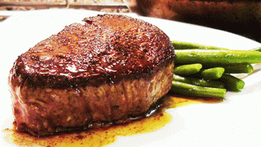

Ingredients (Six servings)
- 6 slices Filet Mignon, each about 1/2 pound
- Salt and pepper
- 1/3c butter
- 2c red wine (preferably Cabernet Sauvignon)
- 1tbs Italian seasoning
- 4tbs extra virgin olive oil, separated into 2tbs
- (Optional) Bleu cheese crumbles
From your mom, to your roommates, to your hottest Tinder matches, this easy recipe will be sure to impress all the carnivores in your life!
Steps
- Before you even begin thinking about putting those filets on the skillet, make a simple marinade of the red wine, Italian seasoning, 2tbs olive oil, and a solid amount of salt. Mix the marinade and steaks in a Ziploc bag and allow them to sit in the fridge for about four hours. Then, allow them to rest at room temperature for about half an hour before cooking them.
- Using a cast iron skillet over med-high heat, melt the butter and mix in the remaining olive oil.
- Once the skillet is so hot that it's smoking, throw in the the steaks and season with salt and pepper to taste. Let cook for 3 minutes before flipping to cook on the other side for another 3 minutes seasoning with more salt and pepper for medium rare. (Optional: sprinkle with crumbled bleu cheese for added flavor complexity.)
- (Optional:) Serve with the same bottle of wine used to make the marinade.